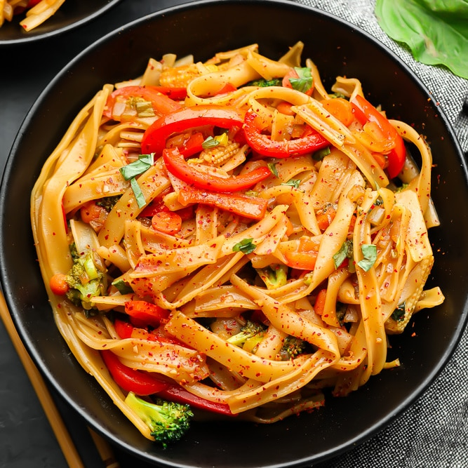

Drunken Noodles

Drunken noodles (pad kee mao) is a thai dish made with rice noodles, protein, and veggies. This is an easy dish made in 30 minutes.
Ingredients
- Wok
- Something to stir with
Protein
- 8 oz choice of protein
- 1 tsp fish sauce
- 1 clove garlic grated
- White/black pepper
Sauce
- 2 tbsp oyster sauce
- 1 tbsp fish sauce
- 1 tbsp soy sauce
- 2 tbsp palm sugar
- White/black pepper
Stir fry
- 2 tbsp cooking oil
- 8 cloves garlic chopped
- 10 thai chili (or as much as you want)chopped
- 1 large shallot sliced
- 6 oz chinese broccoli (or someother leafy green veggie) chopped into bite size pieces
- 1 lb noodles
- 1 red chili/red bellpepper
- handful of basil
Steps
Protein
Begin by marinating the protein
- Place protein into a bowl and add 1 tsp fish sauce.
- Add white/black pepper
- Add 1 grated clove of garlic
Set the protein aside while we prepare everything else.
Sauce
- Begin with 2 tbsp of oyster sauce
- Next add 1 tbsp of fish sauce
- Add 1 tbsp soy sauce
- Add 2 tbsp of palm sugar to the sauce
- Add a pinch of white/black pepper
- Finally mix it all together
Stir Fry
- Begin by boiling the noodles
- Start chopping 8 cloves of garlic
- Chop the 10 thai chilis
- Slice 1 shallot and set it aside with garlic and chili
- Chop up the red chili/bellpepper
- Chop up the 6 oz of chinese broccoli
- pull of basil leaves
Cooking
- Heat up wok until it starts to smoke then add 2 tbsp of oil
- Add shallot, garlic, and chili
- Then add the protein until it is nice and golden brown
- Add chinese broccoli and cook for 1-2 minutes or until your preferred doneness
- Add noodles and sauce
- Stir until noodles are cooked in sauce
- Add thai chili and red basil
And you're done! Enjoy your drunken noodles.